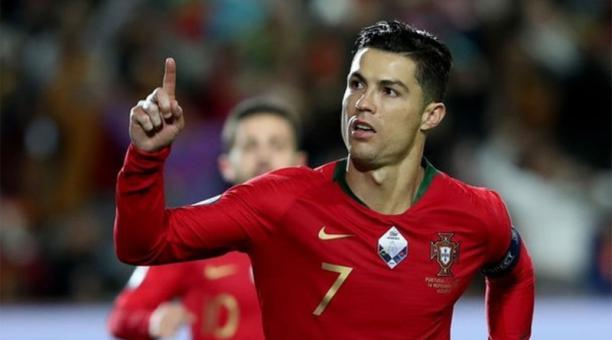

Últimas noticias

La Federación Portuguesa de Fútbol confirmó este martes 13 de octubre del 2020 en su sitio web
que Cristiano Ronaldo dio positivo a las pruebas de covid-19. Por el diagnóstico, Ronaldo se perderá el partido
ante Suecia previsto para el próximo miércoles en Lisboa.
De acuerdo con la Federación, Ronaldo se encuentra aislado
y no presenta síntomas de la enfermedad.
Tras la confirmación del diagnóstico del futbolista, otros jugadores de la
selección portuguesa fueron sometidos a pruebas de diagnóstico de covid-19 este martes 13 de octubre.
Todos obtuvieron resultados negativos, según la Federación. Por lo tanto, el resto de la selección continuará por la tarde
los entrenamientos con Fernando Santos en preparación para el partido ante Suecia.
Portugal y Suecia se enfrentarán el miércoles 16 de octubre en Alvalade a las 19:45, hora local. Ronaldo, según informa el
medio Marca, tampoco jugará los próximos partidos con la Juventus de Turín. Sin embargo, se espera que cuente con un diagnóstico
negativo para el próximo 28 de octubre, cuando el equipo reciba al Barça en la segunda jornada de la Liga de Campeones.
Diario ElComercio